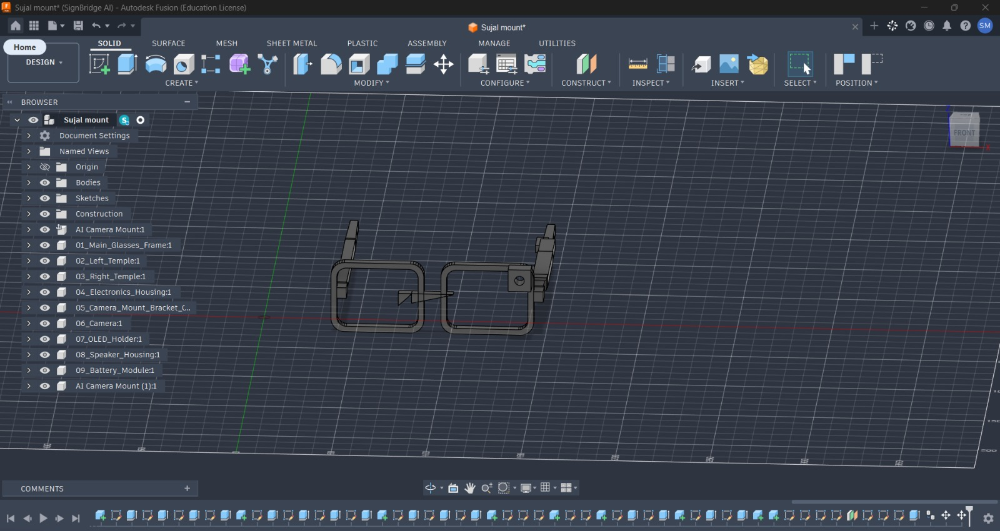
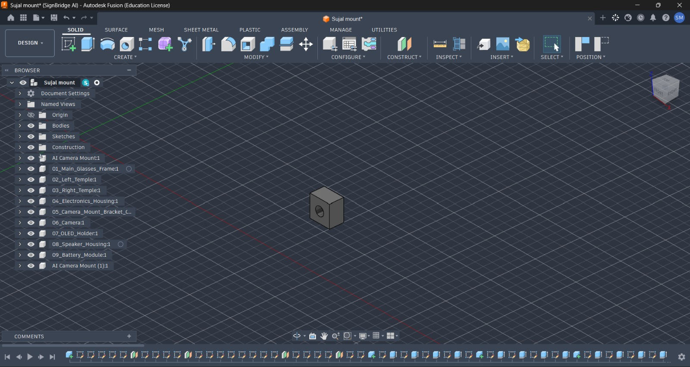
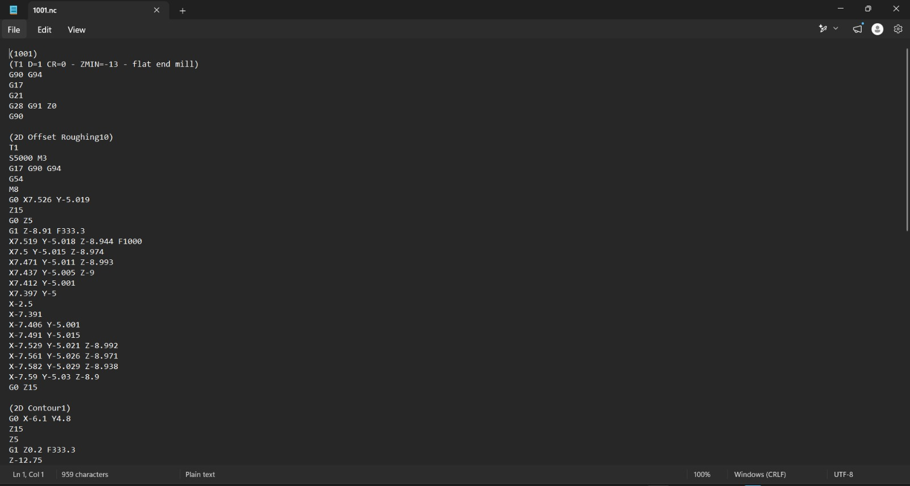

SignBridge AI is an AI-powered assistive smart-glasses system designed to enable two-way communication between sign-language users and people who do not understand sign language.
People who primarily communicate through sign language can face communication barriers when interacting with individuals unfamiliar with sign language.
Existing approaches may depend on interpreters, smartphones or manual typing, which can reduce convenience and the natural flow of communication.
Lack of a common communication method between sign-language users and non-signers.
Some situations require another person to facilitate communication.
Typing messages manually can interrupt the natural flow of conversation.
Integrating cameras, processing, display, audio and power into a wearable form is challenging.
SignBridge AI combines AI, computer vision, speech processing and wearable hardware into one communication platform.
The architecture connects sensing, AI processing, communication and wearable output into a unified system.
The glasses frame provides the physical platform for integrating the sensing, processing, display, audio and power modules.
Captures hand gestures within the required field of view.
Provides visual text output to the wearer.
Provides audio output for recognized signs.
Captures speech from the communicating person.
Handles communication and software/AI processing depending on implementation.
Provides portable power for wearable electronics.
The mechanical development follows a digital-to- physical workflow involving CAD, component design, CAM and G-code development.
Define the wearable form and component integration requirements.
Develop the glasses structure and mounting arrangements.
Design mounting solutions for required wearable components.
Convert applicable geometry into manufacturing instructions.
Combine mechanical, electronic and software development.



Computer vision forms the core of the sign-recognition side of the system.
Hand landmarks represent important points on the hand, including finger joints and other key locations. This provides structured information about hand position and configuration.
Extracted hand information can be converted into features such as landmark positions, relative distances, hand orientation, finger configuration and movement information.
The recognition model processes extracted features and determines the corresponding sign, which is then passed to the text-processing stage.
The current project documentation demonstrates mechanical and manufacturing development. Further integration of AI, sensing and communication modules remains part of ongoing development.
Communication support between students and teachers.
Communication assistance between patients and healthcare professionals.
Support interaction between employees and colleagues.
Communication assistance in offices, banks and public facilities.
Everyday conversations with people unfamiliar with sign language.
Supporting more accessible everyday communication.
Mechanical design, CAD, camera mounting and manufacturing workflow.
Improve recognition models and expand sign vocabulary.
Move beyond isolated signs toward continuous sign-language recognition.
Reduce processing latency and improve real-time performance.
Explore efficient local AI processing for wearable operation.
Reduce component size and improve wearable ergonomics and power efficiency.
Integrate AI, sensing, display, audio and power into a practical wearable.
SignBridge AI focuses on bringing multiple communication technologies together into one wearable platform.
SignBridge AI proposes an AI-powered smart-glasses system for assisting two-way communication between sign-language users and non-signers.